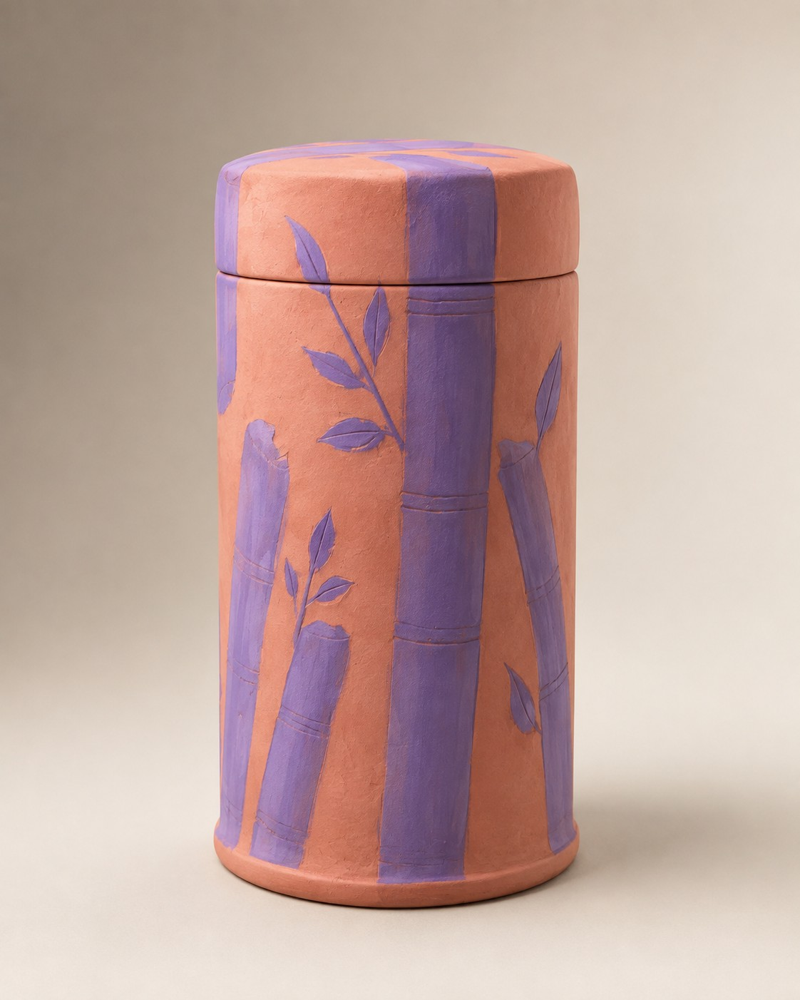

DISEÑO · FUNCIONALIDAD · SUSTENTABILIDAD
Un termo pensado para acompañarte.
Una propuesta de diseño industrial que busca combinar funcionalidad, identidad y conciencia ambiental.
Conoce el proyectoEL PROYECTO
Diseñar algo más que un recipiente.
Este proyecto surge de la necesidad de contar con un termo multifuncional que no solo permita conservar la temperatura de las bebidas, sino que también se adapte a diferentes actividades y necesidades del usuario. La intención del diseño es integrar funcionalidad, practicidad y versatilidad en un solo producto, facilitando su uso en distintos entornos y situaciones cotidianas.
CONCEPTO
La idea detrás de la forma.
El diseño del termo está inspirado en Xin Xin, la famosa panda mexicana, tomando como referencia su identidad y características visuales para crear un producto único y representativo. Durante el proceso de diseño se incorporaron formas, colores y detalles inspirados en ella, buscando mantener un equilibrio entre estética, funcionalidad, ergonomía y versatilidad.
Conocer el concepto →